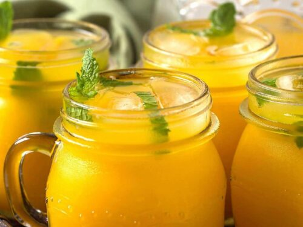

Mango Lemonade Recipe

The perfect drink when it's hot outside. Fast and simple! (click here for the original recipe)
A recipe you'll love! Simple and is a great drink for summer, especially when having people over!
Ingredients
Simple Syrup
- 1 cup sugar
- 1 cup water
Mango Lemonade
- 2 cups chopped mango
- 1 cup water
- 1 cup lemon juice
- 2 cups ice
Steps
Simple syrup
- Combine sugar and water in a saucepan over medium-high heat. Bring to a boil and stir until sugar has dissolved. Remove from heat and allow to cool.
Mango Lemonade
- Combine mango and 1 cup water in a food processor until smooth. Pour mango through a strainer into a pitcher. Stir in lemon juice and simple syrup. Mix well.
- Add ice to pitcher and serve.